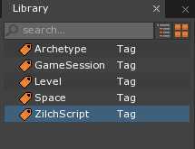
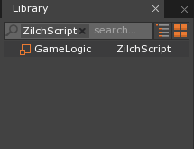
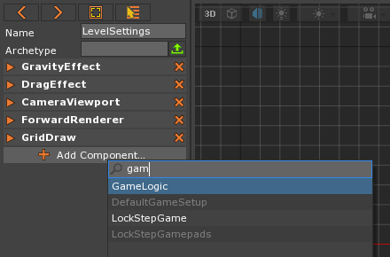

Scripting 1
This lesson introduces basic scripting using Zilch in the Zero Engine, including printing to the Console Window, creating variables, classes, data types, and functions.
Learning Objectives
- Understanding the purpose of variables, functions, classes, and conditionals.
- Know the purpose of the different built in data types.
- Comprehension of basic object oriented programming concepts.
- Using boolean operators and boolean algebra.
- Interpreting and resolving errors in Zilch.
- Printing custom text and data to the console window.
| Vocabulary | ||
|---|---|---|
| Zilch | Game Logic | Script |
| Class | Inheritance | Component |
| Initialization | Variable | Data Type |
| Assignment | Function | Parameter |
| Console | ||
What is Code?
Code is simply a system of words and/or symbols used to communicate instructions to the computer. In Zero, Zilch (a custom programming language made at DigiPen) is used to program behaviors and functionality through components. You can think of the game objects in a project as the bones of the game and the components as muscles that make them move. Without code to make custom components our game would be very boring and static.
Object Oriented Programming
Zilch is an object-oriented programming (OOP) language. This means that instead of thinking of the structure of the program in verbs and actions, one needs to think in terms of nouns and objects. We use objects to model anything and everything in Zilch; in other words, objects can be anything physical, visual, or conceptual. Now keep in mind when we refer to code objects we are not refering to game objects. Components are code objects which are attached to game objects.
Create a New Project
The best way to learn is to do. Create a new project to experiment with Zilch.
Like many things in Zero, a ZilchScript is a resource that will need to be added to your project.
Add a new ZilchScript resource named: GameLogic
The newly created GameLogic script should open in a new tab next to the Level tab, and it should appear in the Library Window:
 
We can use ZilchScripts to write code using the Zilch programming language. Then we can add these scripts to our cogs as components.
Cogs
A game object in the Zero Engine is a collection of components — it is a Game Object Composition, and that’s what cog stands for, backwards. Almost everything that you make and use in your game is a cog.
In this text, you will find the terms cog and game object used interchangeably.
Your new GameLogic script should look like this:
class GameLogic : ZilchComponent
{
function Initialize(init : CogInitializer)
{
//Zero.Connect(this.Space, Events.LogicUpdate, this.OnLogicUpdate);
}
function OnLogicUpdate(event : UpdateEvent)
{
}
}
Classes
Take a look at this first line of code.
class GameLogic : ZilchComponent
The
classkeyword here means thatGameLogicis a new Zilch class or code object.To make your own new component, you have to declare it as a class. Two important rules to remember about classes: one, classes must have unique names; two, the name of a class must always begin with a capital letter.
Case Sensitivity
Zilch is a case-sensitive language. That means that you could declare a class called ExampleClass and another one called Exampleclass, and the engine would have no trouble distinguishing the two. Likewise, if you create a component called GameLogic and add it to a cog, you won’t be able to find it if you look for Gamelogic.
Remember, though — just because you can does not mean that you should. Generally, it’s a bad idea to give things names that are differentiated only by capitalization.
- The colon
:betweenGameLogicandZilchComponenttells the engine that your new class inherits from theZilchComponentclass.
Functions
function Initialize(init : CogInitializer)
The
functionkeyword is used to declare a new function.Initializeis the name of the function that we have declared.Initializeis a special function that is inherited from theZilchComponentclass. The engine automatically calls theInitializefunction of every component on a cog when that cog is first created.Next is
(init : CogInitializer). This is called the parameter list of this function. You can think of a function’s parameter list as a part of its name.Note that the colon
:betweeninitandCogInitializerdoes not do the same thing as the colon betweenGameLogicandZilchComponent. This one specifies the data type of theinitparameter.
- Also, notice how in our code here,
functionis printed in bold text and in a different color from the rest of the code (and so isclass). This is because it is a reserved word. You can’t name anythingfunctionorclass(or any of a number of other keywords).
Reserved Words
In Zilch, no function, class, or anything else can be named function or class because those words are reserved — they already mean something to the language and we can’t change that.
Scopes
Pay special attention to the position and alignment of curly brackets.
class GameLogic : ZilchComponent
{
[...]
// code that is part of the class
}
// code that is not part of the class
- A pair of curly braces
{}encloses everything in theGameLogicclass. Everything between them is a part of the class; anything outside of them is not.
function Initialize(init : CogInitializer)
{
[...]
// code that is inside the function
}
// code that is outside the function
- Similarly, another pair of braces surrounds the
Initializefunction. Any code written between them is a part of the function, and will be executed every time the function is called.
Zilch is a whitespace-insensitive language. This means that any number of spaces inserted by the Space bar or Tab key are treated just the same by the engine as a single space. (The same is true of newlines inserted by the Enter key.) Your GameLogic class could be written in the following manner, with no impact on how well it works:
class GameLogic:ZilchComponent{function Initialize(init:CogInitializer){
//Zero.Connect(this.Space, Events.LogicUpdate, this.OnLogicUpdate);
}function OnLogicUpdate(event:UpdateEvent){}}
Of course, it’s much harder to read that way! Conversely, you could write it like this:
class GameLogic : ZilchComponent
{
function Initialize ( init : CogInitializer )
{
//Zero.Connect(this.Space, Events.LogicUpdate, this.OnLogicUpdate);
}
function OnLogicUpdate ( event : UpdateEvent )
{
}
}
... but this might be a bit excessive. Remember that you are free to use as much or as little whitespace as you like in writing your code, as long as you don’t put it in the middle of words.
Comments
Comments allow us to leave notes to ourselves and others reading our code in our human language (instead of a programming language) so that we can quickly understand what we were doing. Commenting not only allows us to write the logic behind what we are doing beforehand, but it helps us quickly remember what the code was for when we haven’t looked at it in a long time. We create comments in Zilch by placing // at the beginning of the comment; it extends until the end of the line. The comment will be ignored when the script is processed, so it doesn’t affect the script’s functionality.
You can see some code “commented out” in your generated file inside the Initialize function.
In the GameLogic ZilchScript Window
In the Initialize function
Change:
//Zero.Connect(this.Space, Events.LogicUpdate, this.OnLogicUpdate);to
// This is a comment.
A comment does not affect the program, but allows you to leave notes to yourself.
Printing
Now we will print to our Console Window using Zilch’s Console library. We will print a number in our GameLogic’s Initialize function.
- In the GameLogic ZilchScript Window
- In the Initialize function
- On the line after the comment
- Type:
Console.WriteLine(9001);
- Type:
- On the line after the comment
- In the Initialize function
This line of code will print the number 9001 in the Console Window. Don’t forget about the semicolon at the end of the line! Your GameLogic script should look like this:
class GameLogic : ZilchComponent
{
function Initialize(init : CogInitializer)
{
// This is a comment.
Console.WriteLine(9001);
}
function OnLogicUpdate(event : UpdateEvent)
{
}
}
Errors
If you make a mistake, such as putting an extra closing parenthesis at the end, you will get a compiler error that looks something like this:
Console Output:
The statement must end with a semicolon. We found ')' but we expected to find ';'.
Errors occur the moment the compiler finds a symbol or word it doesn’t recognize in context. Therefore, when looking for your bug you should always investigate the code at or before the area indicated by the error. Always READ the errors. They are helpful!
Here it does not know what to do with a closing parenthesis when it did not see a matching open one come before it. It was expecting a semicolon right then. Note: Error messages clear upon typing or erasing within the script editor, but this doesn’t mean the error is gone. If you do not fix an error, the message will reappear the next time you compile (i.e. when you try to save or run your game).
Once your code is bug-free we can see the new component in action.
Running the Script
Let’s see our statement print to the console:
- Open the Console Window via the
Consolecommand - In the Console Window
- Press
Ctrl+Deleteto clear the console
- Press
- Press the
F5key to run the game
Now if we look at the Console Window, it should have printed the number. Why wasn’t the number printed? Oh! We forgot to add the script to an object. An object uses or calls the Initialize function on all of its components when it is first created. Since it wasn’t on any object, it never got called, and our code wasn’t used.
Typically, when a script’s logic applies to all objects in a current level, we put it on that Level’s LevelSettings object:
Close the Game Window via:
Escapekey when in the Game Window OR the X button on the Game Window tabIn the Objects Window
In the Properties Window
Click the Add Component button
Type: GameLogic

Select GameLogic via: a
Left-Clickon the drop down list OREnterNote that
GameLogicshows up here because there is a class by that name. The project does also contain a file called “GameLogic.z” — but the names of a class and the file that contains it do not necessarily have to match. If you renamed theGameLogicclass toMyGameLogicClass, thenMyGameLogicClasswould be what you would see when you went to add it to the LevelSettings cog. Conversely, if you were to rename the “GameLogic.z” script to “MyGameLogicScript.z”, you would still seeGameLogicwhen you added it to LevelSettings.
Now if we look at the Console Window, it should have printed the number. This is the console output we should get:
Console Output:
Saved level file 'Level'. Saved : Project and all scripts saved. ---------------- End Game --------------- ---------------- Begin Game --------------- 9001 Level 'Level' was loaded. Loaded level 0.00s
Notice that after the game begins, our number is printed in the console. This lets us know that our script is working and that our Initialize function is getting called.
Order of Execution
- Go back to the GameLogic script via: Clicking on the GameLogic tab OR Double-clicking on the GameLogic script in the Library Window:
What else can we print? How about a message? Text between quotation marks can be stored by the computer; we call such text a string, more will be explained on this data type in the next lesson.
- In the GameLogic ZilchScript Window
- In the Initialize function
- On the line after
Console.WriteLine(9001);- Type:
Console.WriteLine("Here be dragons.");
- Type:
- On the line after
- In the Initialize function
Your Initialize function should look like this:
function Initialize(init : CogInitializer)
{
// This is a comment.
Console.WriteLine(9001);
Console.WriteLine("Here be dragons.");
}
Make sure your sentence, or String, is in between quotation marks!
- In the Console Window
- Press
Ctrl+Deleteto clear the console
- Press
- Save your project and run the game
- Stop the Game
Console Output:
Saved : Project and all scripts saved.
---------------- Begin Game ---------------
9001
Here be dragons.
Level 'Level' was loaded.
Loaded level 0.01s
---------------- End Game ---------------
Notice how the outputs of our print statements in the console window are in the same order as the print statements themselves in our code. This is because programs execute one statement at a time. If we were to switch the order of the lines, it would change the order they print in.
Random
Our program is static and does the same thing every time. Let’s add a little excitement — let’s roll a die.
- In the GameLogic ZilchScript Window
- In the Initialize function change your code to:
function Initialize(init : CogInitializer)
{
Console.WriteLine("Here be dragons.");
// Create a random number generator
var randNumGen = new Random();
// In honor of dragons and D&D, roll a d20:
var randNum = randNumGen.DieRoll(20);
// See what we rolled:
Console.WriteLine(randNum);
}
This new code creates a random number generator, and then calls its DieRoll function. This function simulates rolling a die, but it requires a parameter to be passed to it to specify the number of sides on the die to roll. We want to roll a d20, so we pass in 20. If we had passed in 6, DieRoll would give us the result of a d6 roll.
You’ll see your random number printed out in the Console Window.
- Rerun the game multiple times.
You should see that the number printed is changing between runs.
Variables
Here you used the var keyword to make a variable. Variables are like buckets. They are simple containers you can store stuff in. When you come back, the last thing you put inside it will still be there and you can change the contents of the bucket as you see fit. You can fill it with explicit items or literals, such as 3 or "Hello!". You can mimic the contents of another bucket via assignment, as in the following example:
- In the GameLogic ZilchScript Window
- In the Initialize function change your code to:
function Initialize(init : CogInitializer)
{
//Create and print our buckets
var bucket1 = 1;
var bucket2 = 2;
var bucket3 = 3;
Console.WriteLine(bucket1);
Console.WriteLine(bucket2);
Console.WriteLine(bucket3);
// Set bucket1's contents equal to bucket2's contents:
bucket1 = bucket2;
Console.WriteLine(bucket1);
// bucket1 now has a value of 2
// bucket2's contents remain unchanged, having a value of 2
// Set bucket3's contents equal to the sum of the contents of bucket3 and bucket1
bucket3 += bucket1;
Console.WriteLine(bucket3);
// The value of bucket1 is still 2 because that is the last thing we stored in
//it, so:
// bucket3 += bucket 1 becomes:
// bucket3 = bucket3 + bucket1 becomes:
// bucket3 = 3 + 2
// The contents of bucket3 are now updated to 5.
}
The output should look like this:
Console Output:
1
2
3
2
5
First the values of bucket1, bucket2, and bucket3 are printed. This is followed by the value of bucket1 after it has been assigned the value of bucket2. Finally bucket3 is printed after the modified value of bucket1 is added to it.
Conclusions
In this script, you’ve used variables to store:
- the object created by
new Random()and - the value returned by the
DieRollfunction - various Integer values
Because you had the ability to store the value from the DieRoll, you were able to pass it along to the Console.WriteLine function to see its value: Console.WriteLine(randNum);. You were able to do the same with with Integers. The next lesson will experiment more with these concepts as well as others.
On Your Own
- Experiment with different operators and variables.
- Look at the variable data types we didn’t look at in this lesson.
- Mix and match the order of operation on line, and the order lines are written in to see what outputs you get from the example above.
- Make sure you know the difference between
+,=, and+=. - Experiment with using
=,+=,-=,*=, and/=on the same line. - Use the
==operator and print the results.